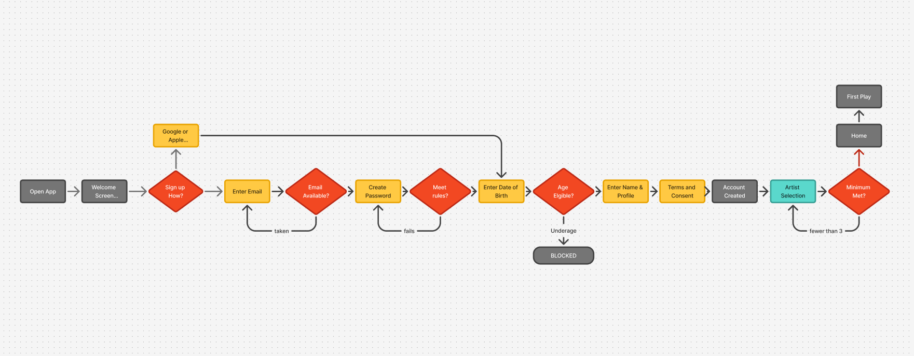
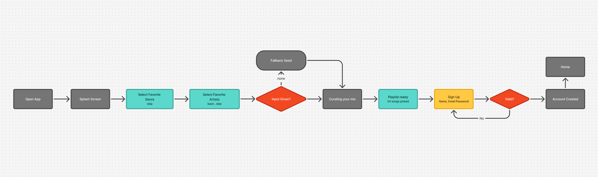
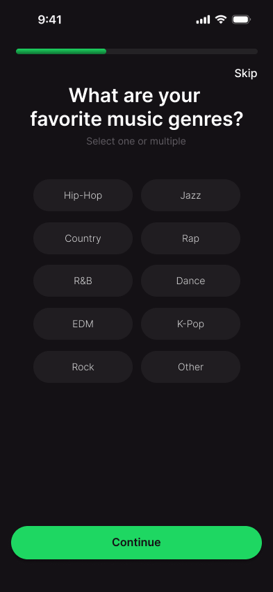
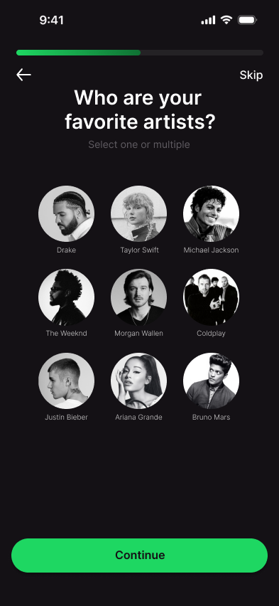
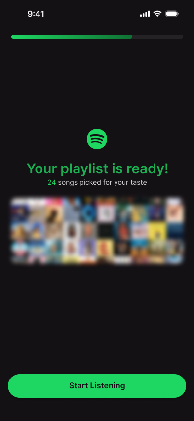
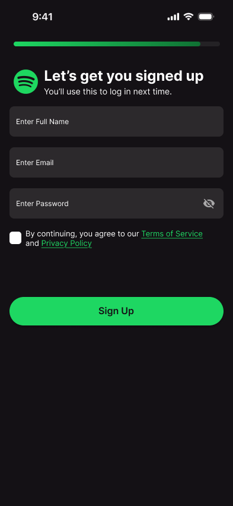

UX case study · Spotify onboarding · 2026
Reducing signup drop-off
Spotify asks for six things before it plays a song. I put the payoff first: a playlist built from your taste, then the account.
asks before you get anything
error loops before any value
choices you make before the ask
Counted from the two flow maps. No access to Spotify's data, so this is a hypothesis, not a result.
Audit
Spotify's signup today
Drop-off isn't caused by length. It's length that gives nothing back.

Constraint: date of birth is legally required, so it stays.
No major music app shows the payoff before the ask. The closest pattern is Duolingo: a lesson before the account.
Drivers
Why people leave, and the response to each
Six asks before any audio.
Payoff before the ask
No progress shown.
Segmented bar from screen one
Three validation loops, all before value.
Validate after there's something to protect
Date of birth arrives unexplained.
Explain every ask
Artist grid, three-pick minimum.
Fewer options, no minimum
Account before proof.
Prove the product first
I gave it three artists and it played me the same stuff it plays everyone.
Bet
One hypothesis, written to be proven wrong
a new user gets a personal playlist before registering,
more people who open the app reach first play,
the account saves something they own, instead of gating something unproven.
playlist → account converts no better than Spotify's welcome → account.
“You added three screens.” Yes, and each gives back. So the metric is end-to-end completion, not form completion.

Screens
Five steps, one ask

Step 1Genres
D5Ten chips, multi-select said out loud
D3No minimum, so no error loop

Step 2Artists
D5Faces first, names beneath
D3Back button to fix a pick
Curating
D4A visible wait, so the result feels made for you

Step 4 · the payoffPlaylist ready
D4“24 songs” reads as computed
D6Lands right before the ask

Step 5 · the only askSign up
D4Subtitle says why: save what you built
D3Inline errors, password toggle
Green means one thing: selected, enabled or done. The primary button never moves, and selection changes the fill so the grid never shifts.
Measure
How we'd know, and what's missing
Ship rule: if completion rises but day-7 retention falls, it optimised the wrong thing.